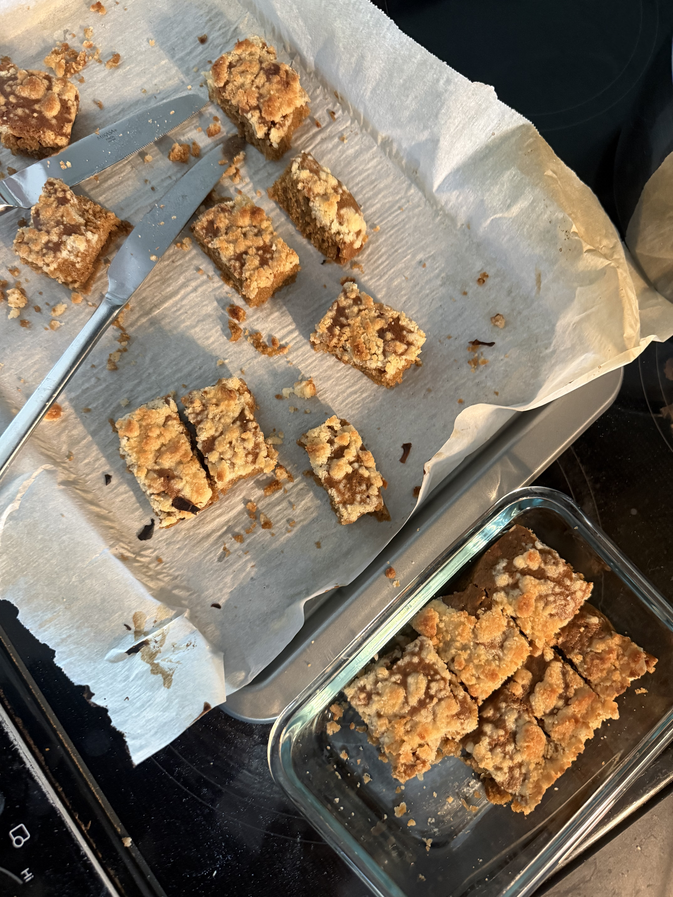
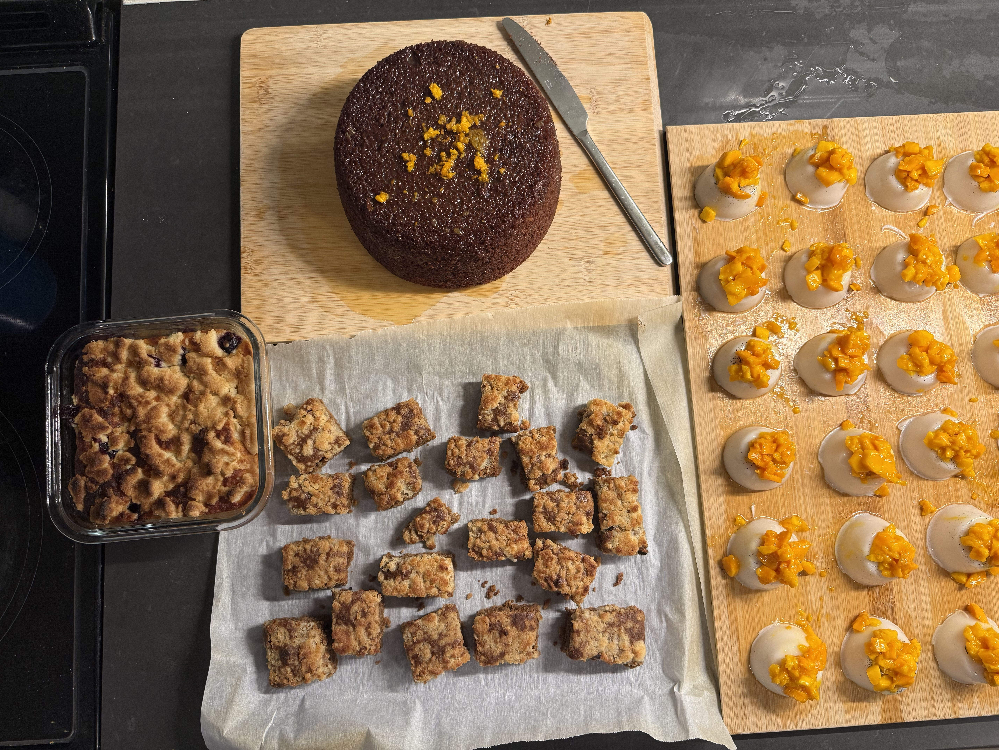

Routine
I am someone who likes to follow some semblance of a routine to keep me sane, on the weekends at the very least. I always like to start my weekend mornings with a freshly made batch of masala chai. And while I am still on a journey of trying to replicate my aunt’s perfectly-balanced cup, I do believe that I can now confidently claim to make a decent enough cup. At least that was what I had thought, until this one Sunday morning in the summer. I started making my chai as I usually do, by taking a handful of whole spices to pound with a mortar and pestle. I add at least 7-8 pieces of cardamom, 2-3 cloves, 1 star anise, sometimes a sliver of cinnamon (which I tend to skip in the summers) and less than half a teaspoon of ajwain and saunf (a recent addition because of a friend’s recommendation). I boil these spices for a few minutes in water, until the volume of water halves in size, and then I add in half an inch of grated ginger. Once the water reduces, I add in the chai (dried black tea leaves) and let it simmer for only a minute or two. After that, I usually add in whole milk.
The disaster began when I went to fetch milk and I saw that it had gone completely bad. It had basically separated into cheese curds and whey. At this moment, I was also distracted talking to my sister on the phone, and I will wrongly blame her for what happened next. I remembered that I had some coconut milk (not the canned kind, but the more stabilized drink that comes in a carton) lying around, and I thought that I could use it as a decent enough replacement for the whole milk. While I am deliberating all of this and talking on the phone, I forget to turn off or reduce the flame, so the chai is still boiling away to a point where the tea starts to oversteep and get extremely bitter. I now add in the watery coconut milk drink and let it simmer for another two minutes, before I switch off the flame. I usually drink my chai unsweetened, so I serve the chai and start drinking it. It was truly terrible; the tea tasted so bitter and it overpowered all the spices. Not to mention that the consistency was so watered down it was almost like I cried into the mug because of how bad it was. I could not bear to sip another sip of this, but I had made around two whole cups of this disaster.
I really do not like wasting food, and I did not want to throw away this whole batch. I wondered what I could do, and then I remembered that I had a dinner party to attend at a friend’s house the next day. I started brainstorming dessert ideas and was very fixated on the idea of a coffee cake crumble but with a chai flavor instead. I started chatting with my favorite chatbot and it came up with a chai cake recipe that used up most of my concentrate. I am a very big fan of slop recipes and I love using AI to make recipes from what I have left in the fridge. I also have a rule-of-thumb when it comes to following any cake recipe that is more USA-centric; I always only use 50-75% of the amount of sugar that the recipe calls for, because it can get way too sweet for my palette. I also wanted to add a cardamom crumble topping and I asked my trusted chatbot to help me with that as well. Here is the chai crumble sheet cake recipe that I followed (after adjusting for my sugar preferences).

Ingredients
Crumble:
- ½ cup all-purpose flor
- ½ cup granulated sugar
- ¼ melted unsalted butter
- Pinch of salt
Cake:
- 1 cup room-temperature or cooled coconut chai concentrate
- ½ cup neutral oil or melted butter
- 2 large eggs
- ¾ cup granulated sugar
- 1 ¾ cups all-purpose flour
- 1 ½ tsp baking powder
- ½ tsp baking soda
- ¾ tsp salt
Method:
- Preheat your oven to 350 F (180 C) and grease a pan of your choice. Baking time varies with pan shape, and I used a sheet cake pan
- Mix the crumble first. In a small bowl, toss together the flour, sugar, and salt. Pour in the melted butter and mix it together with a fork or your hands, until the consistency resembles wet sand. Set this aside.
- Mix the wet ingredients for the cake. In a large mixing bowl, mix together the oil/butter, sugar, eggs, and the chai concentrate until it is totally smooth.
- Add in the baking powder, baking soda, and salt. Mix it in the wet batter and ensure that it is well-distributed.
- Fold in the flour until the batter is smooth and there are no streaks of dry flour. Pour the batter into your pan.
- Bake the cake in your oven for 20-25 mins (for a sheet cake) or 40-45 mins (for a regular round thick cake). The cake is ready when a toothpick inserted in the middle comes out clean.
